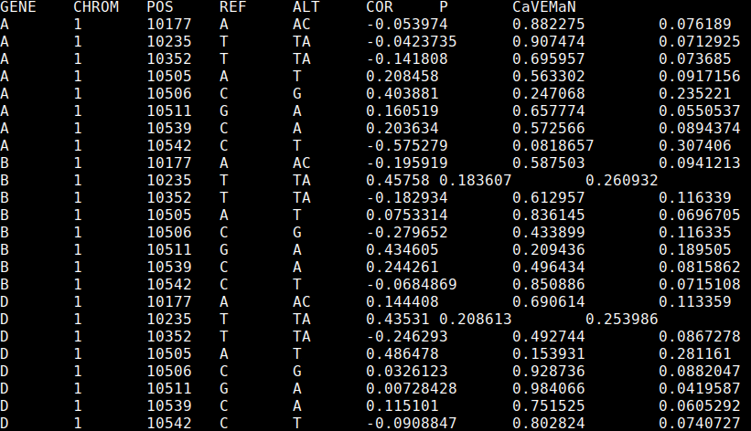

CaVEMaN
CaVEMaN Causal Variant Evidence Mapping using Non-parametric resampling
Given the results of an eQTL mapping analysis, together with the expression, genotype and phenotype files, this software will estimate the probability that the peak eQTL is causal. For more details, please see the associated paper.
Contents
- Downloading CaVEMaN
- Input data formats
- Creating a single phenotype bed file from an eQTL list
- Running CaVEMaN
- Extracting peak SNPs and estimating causal probabilities
- Running simulations to estimate parameters
- Building from source
Downloading CaVEMaN
CaVEMaN binaries can be downloaded from here:
https://github.com/funpopgen/CaVEMaN/releases/tag/v1.01
The standard binary is called CaVEMaN. Use CaVEMaN_CentOS if there is an error referring to GLIBC.
CaVEMaN requires tabix to be installed: https://github.com/samtools/htslib.
If there are any issues, you can try building from source, or contact andrew.brown@unige.ch.
Input data formats
CaVEMaN uses the same data formats as fastQTL (http://fastqtl.sourceforge.net/), which the exception that the bed file should be uncompressed. To convert the fastQTL bed file run the following line:
gunzip myphenotypefile.bed.gzThe bed file should only contain genes for which an eQTL has been discovered, unless a set of conditional eQTLs have been produced, in which case the next section explains how to produce a new bed file from this list. This requires a list of eQTL, which should be a tab-separated file with no header, and the following fields to uniquely determine the SNP-gene pairs:
- Gene
- Chromosome
- Base pair location
- Reference allele
- Alternate allele
The --single-signal and --simulate options can also take a covariates file. This should be tab separated, the first row should contain subject IDs, and there should be one row for each covariate.
Creating a single phenotype bed file from an eQTL list
CaVEMaN is based on the assumption that there is only one eQTL signal in the cis window. In cases where multiple eQTLs are known for a given gene, we can produce "single signal" phenotypes by regressing out all but one eQTL at a time (and optionally covariates as well). Given an expression bed file (expression.bed), a genotype file (genotype.vcf.gz) and a list of eQTL (eqtl.list), we produce the file with the following command:
CaVEMaN --single-signal --eqtl eqtl.list --bed expression.bed --vcf genotype.vcf.gz \
--out corrected.expression.bedIf a set of important covariates are known (covariates.txt) were included in the eQTL mapping, these can be considered as well:
CaVEMaN --single-signal --eqtl eqtl.list --bed expression.bed --vcf genotype.vcf.gz \
--out corrected.expression.bed --cov covariates.txtRunning CaVEMaN
To run CaVEMaN, all that is necessary is a bed file containing expression values (expression.bed) and a vcf file containing genotype values (genotype.vcf.gz, either the DS or GT field must be present).
CaVEMaN has been designed so that the full analysis can be broken up into chunks, which can be submitted as cluster jobs separately. This requires two flags (if neither are present the whole analysis will be submitted), --genes specifies the number of genes to be analysed in each job, --job-number indexes the job. Therefore, if --genes 10 is specified, --job-number 1 will analyse genes 1-10 in the bed file, --job-number 2 will process genes 11-20 and so on.
To submit a job array, with a bed file of 9,995 genes, where each job analyses 50 genes (9,995 / 50 = 199.9, so we need to run 200 jobs to cover all genes), we would submit the following command to an LSF cluster:
bsub -o out -J"CaVEMaN[1-200]" \
"CaVEMaN --bed expression.bed --vcf genotype.vcf.gz --genes 50 \
--job-number \$LSB_JOBINDEX --out results\$LSB_JOBINDEX"In addition, the --perm option allows you to set the number of bootstrap samples used in the analysis.
This command will produce 200 results files, results1-results200. To concatenate them together run:
awk 'FNR>1||NR==1' results* > results.allThe output should look like this:

The output contains every SNP in the cis window, the first five fields specify the gene and SNP, Cor and P fields give the results of a simple correlation analysis of SNP and gene, and CaVEMaN gives the CaVEMaN score, a measure of whether this SNP is causal.
Extracting peak SNPs and estimating causal probabilities
Once the CaVEMaN analysis is complete, we can parse the results file to extract the SNP most likely to be causal, and calculate its causal probability (using the results of simulations). To do this run the following command:
CaVEMaN --best results.all --out results.bestThe file results.best should look like this:

The file contains the same fields as before, with the addition of the "Probability" column which gives the probability the SNP is causal.
Running simulations to estimate parameters
CaVEMaN uses parameters estimated from eQTL data, and we have seen these parameters to be consistent over a range of sample sizes, genotype structure, sequencing pipelines and tissue types. However, it is possible that there will be cases in the future for which these parameters are not appropriate, for example, with much larger datasets than currently available. In this case new simulations can be run to estimate parameters suitable for the analysis.
Firstly, given a list of eQTLs, a vcf file and a bed file, run the following command to generate a dataset of simulated expression with known genetic signals that are matched to real eQTLs:
CaVEMaN --simulate --eqtl eqtl.list --bed expression.bed --vcf genotype.vcf.gz \
--out simulated.expression.bedThen, run a full CaVEMaN analysis on this file as described in the previous section, producing a results file called results.all. To estimate two parameter files (rank and weights) based on these results, run:
CaVEMaN --get-weights --results results.all --rank new.rank --weights new.weightsNow, to use these new parameters when running CaVEMaN, firstly run the CaVEMaN analysis specifying the --rank flag, i.e.:
CaVEMaN --bed expression.bed --vcf genotype.vcf.gz --rank new.rank --out results Then, when extracting causal probabilities, pass the --weights flag:
CaVEMaN --best results.all --weights new.weights --out results.bestBuilding from source
This requires a D compiler and a version of the GNU scientific library, version 2.1 or above.
Cloning the repository
First, clone the repository by running:
git clone https://github.com/funpopgen/CaVEMaN.gitThis should create a folder called CaVEMaN. Inside this folder is a file called makefile, in the first four lines we can specify the location of the D compiler and also where the gsl library is (if it is not already installed on your cluster).
Download a D compiler
Then, download a D compiler from either here: https://github.com/ldc-developers/ldc/releases or here: http://dlang.org/dmd-linux.html (ldc produces faster software, my experience is that dmd works better on older operating systems). Decompress the downloaded file, then edit either the first or second line of the makefile in the CaVEMaN folder so that it contains the full path to the relevant compiler, i.e. either:
DMD := /path/to/dmd2/linux/bin64/dmd
or
LDC := /path/to/ldc2-1.1.0-beta2-linux-x86_64/bin/ldc2
Installing, if necessary, a recent version of the gsl
First, check if a sufficiently recent version of the gsl is already installed by running:
gsl-config --versionIf this states that version 2.1 or more recent is installed, you can move on to building the software.
Otherwise, download the gsl from here: http://mirror.switch.ch/ftp/mirror/gnu/gsl/gsl-2.4.tar.gz.
Create a folder to install it to called gsl, then run the following commands:
tar -xf gsl-2.4.tar.gz
cd gsl-2.4/
./configure prefix=/path/to/gsl
make
make install
cd .. && rm -rf gsl-2.4.tar.gz gsl-2.4Then, edit the third line of the makefile to point at the gsl folder:
GSL := /path/to/gsl
Building the software
Now to compile the software run the following two commands:
make test
makeThe CaVEMaN binary should be within the bin folder in the CaVEMaN directory, running
./bin/CaVEMaN --helpshould bring up the help.